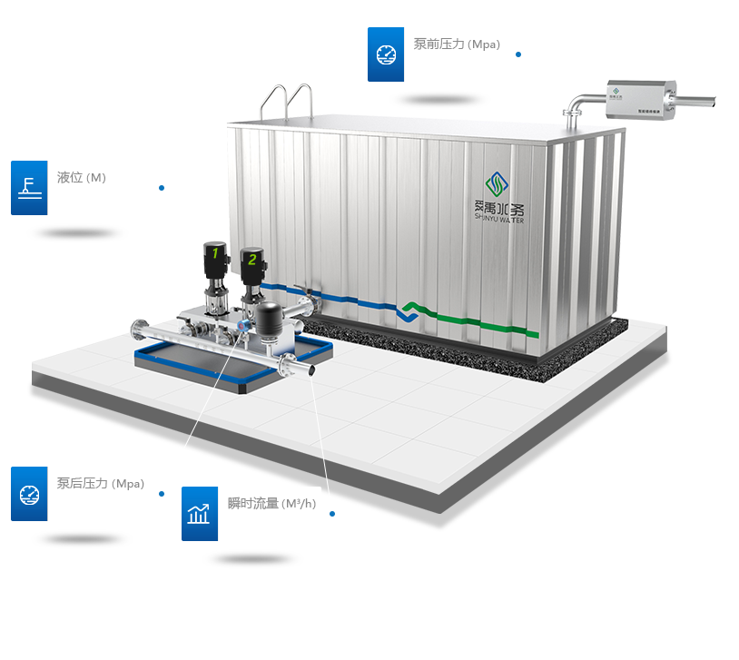
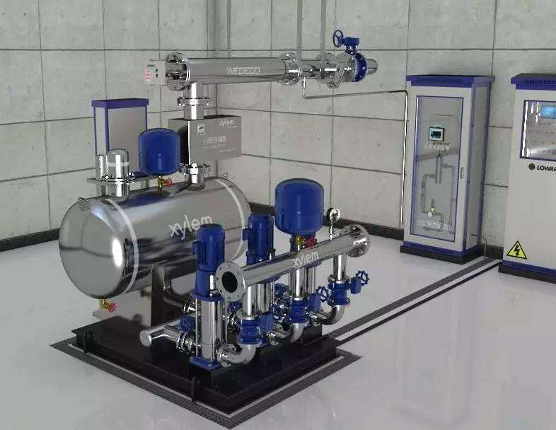

2018-12-03 09:45:56
首页
站点运行统计
站点总数：35
正常站点：35
告警站点：1
金城镇思模村东站
金城镇思模村西站
金城镇小清培站
金城镇西南圩站
金城镇管庄西站
金城镇管庄南站
金城镇管庄东站
金城镇毛家北站
金城镇毛家南站
金城镇沈史蔡村站
金城镇刘庄站
金城镇蒋庄站
金城镇曹庄站
金城镇白塔集镇站
金城镇兆歧村东站
金城镇兆歧村西站
儒林镇前鲁塘站
儒林镇双坝头站
西城街道樊家边站
指前镇东周站
指前镇城头站
指前镇上溪圩东站
指前镇上溪圩西站
指前镇西大埂西站
指前镇西大埂东站
指前镇庄阳站
指前镇洮西集西站
指前镇洮西集东站
指前镇后渎西站
指前镇后渎东站
指前镇水西站
指前镇后里站
指前镇芦巷站
指前镇高家圩站
指前镇湖荡圩站

杨庙供水站工艺流程图
2.29
5.24
5.24
5.24
3.87
远程控制
设置手/自动
开启后为自动模式
设备名称
频率设置
启停
1号泵
2号泵
3号泵
4号泵
5号泵
取消
确定
一号泵
运行中
124
二号泵
运行中
124
三号泵
运行中
124
四号泵
运行中
124
实时数据
提升泵1频率
0
提升泵1频率
0
提升泵1频率
0
提升泵1频率
0
提升泵1频率
0
提升泵1频率
0
提升泵1频率
0
提升泵1频率
0
提升泵1频率
0
提升泵1频率
0
提升泵1频率
0

金城镇思模村东站1
水质监测统计
查询时间
-
清空
确定
94%
6%
0
103
1
0
统计批次
104
设备生命周期
查询时间
-
清空
确定
设备一：良好
93.26%
设备二：一般
6.74%
设备二：一般
6.74%
设备三：谨慎
0%
告警统计
查询时间
-
清空
确定
22
单位：次
流量统计
查询时间
-
清空
确定
364
单位：吨
能耗统计
查询时间
-
清空
确定
平均值
32
最大能耗值
45
最小能耗值
25
消耗统计
查询时间
-
清空
确定
设备消耗
|
用料消耗
TOP1
风机
个
35
TOP2
污泥回流泵
个
24
TOP3
提升泵
个
21
TOP4
曝气
个
17
TOP5
硝化液回流泵
个
12
<
1/1
>
用电量统计
查询时间
-
清空
确定
运维统计
查询时间
-
清空
确定